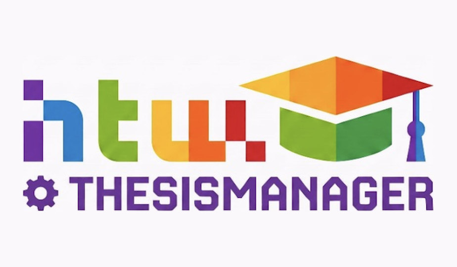
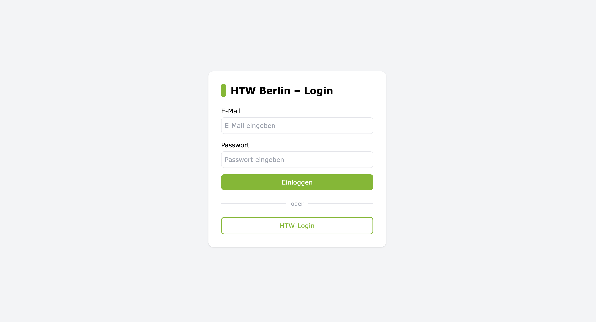
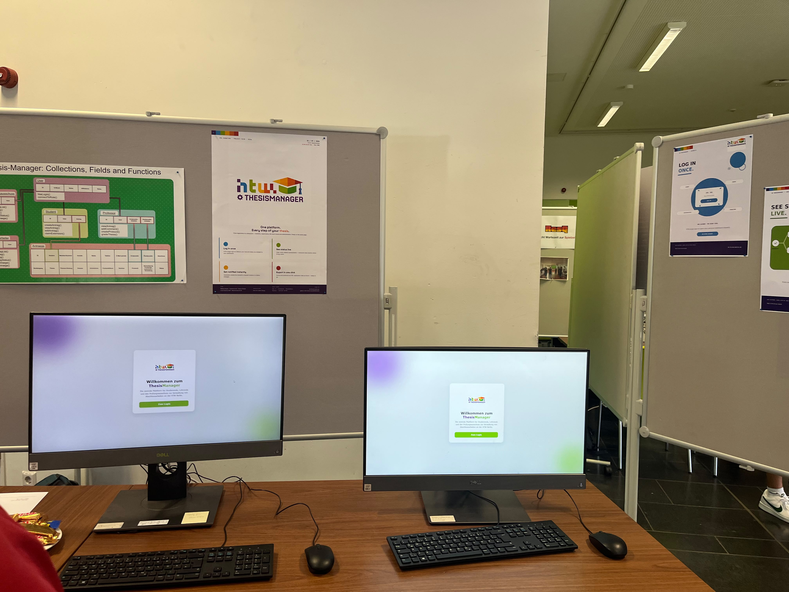
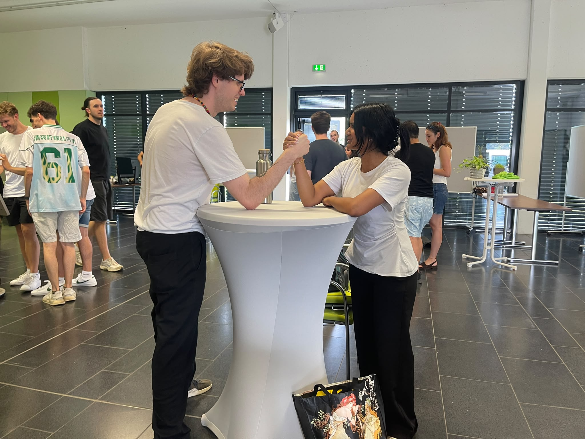
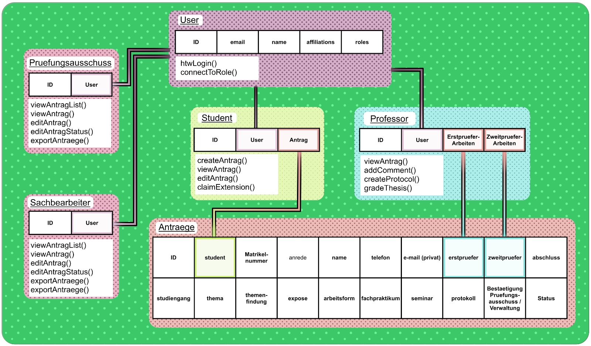

Full-Stack Web Application
Thesis Manager
A single platform for thesis administration at HTW Berlin
connecting
students, examiners, the examination board and administrative staff
from application through to colloquium.
Overview
A thesis passes through four sets of hands student, examiner, examination board and administration each working from a different place. Thesis Manager puts everyone on the same record, so status is something you see instead of something you ask about.
Key features
SSO and HTW data import
Users sign in with their existing HTW account, and their university data comes with them.
Smart routing by role
The app resolves the user's role at login and sends them to the dashboard built for it.
Role-specific dashboards
Card layouts instead of long tables each role sees only the work it owns.
Automated notifications
Email on status changes and new requests, so nobody polls the system.
PDF generation
Forms and colloquium records generated from data already in the system.
Excel export
Administration exports application data for reporting outside the platform.
At IMI Showtime
Presented live at HTW Berlin's IMI Showtime project fair.



Sample output
An application form generated by the platform one of the PDFs students download straight from their dashboard.
Open in new tab →
My contribution
- Full-stack feature work across the Vue 3 frontend and PocketBase backend
- PDF generation with jsPDF for application forms and colloquium records
- Excel export with SheetJS for administrative reporting
- Testing across the application
Technology stack
Frontend
Backend & auth
Documents & infra
Architecture
Five roles, one data model, each reads and writes the same application record as it moves through the workflow.

Challenges
01
HTW single sign-on
Login runs through HTW's identity provider, mapping the identity it returns onto four roles was a prerequisite for everything behind it.
02
VM coordination and CI/CD
Getting the pipeline, container and a university-hosted VM to agree took setup in an environment we didn't control, once it held, deployment stopped needing attention.
03
User testing
Testing with actual students and examiners changed the dashboards more than our internal discussions did.
Interested in the project?
The application is live at HTW Berlin.